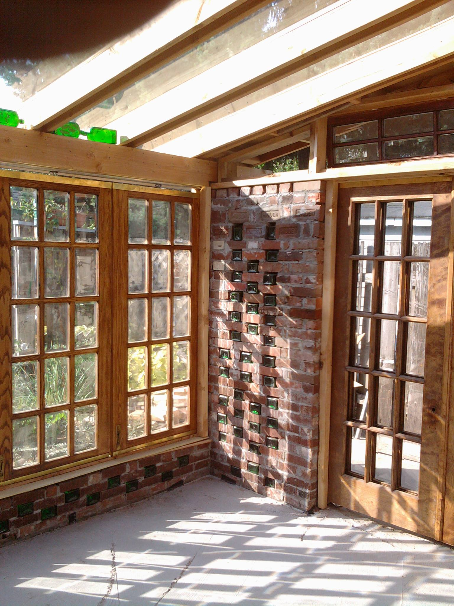
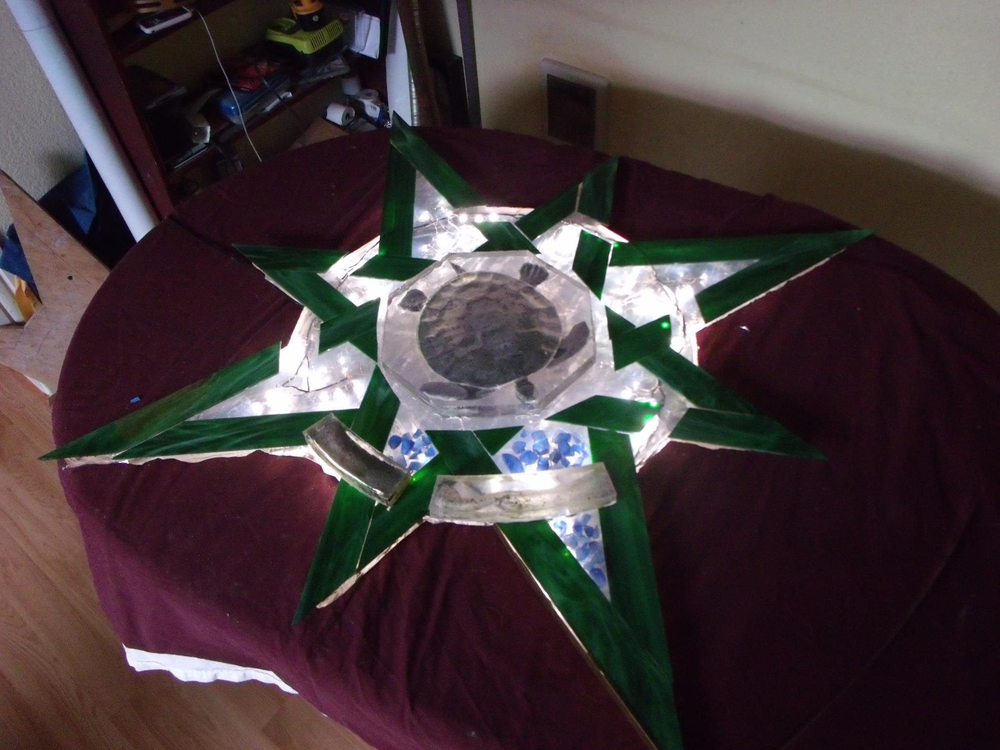
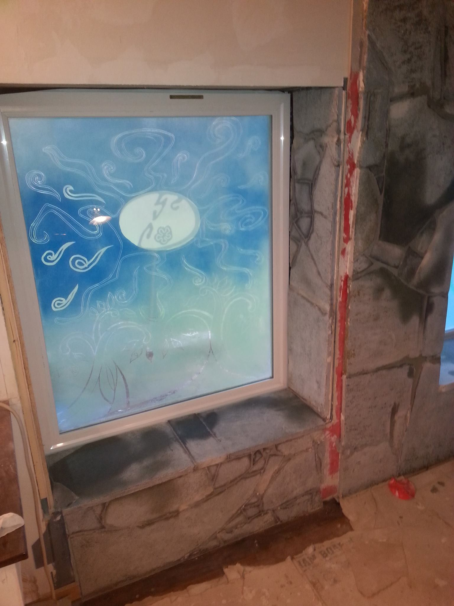
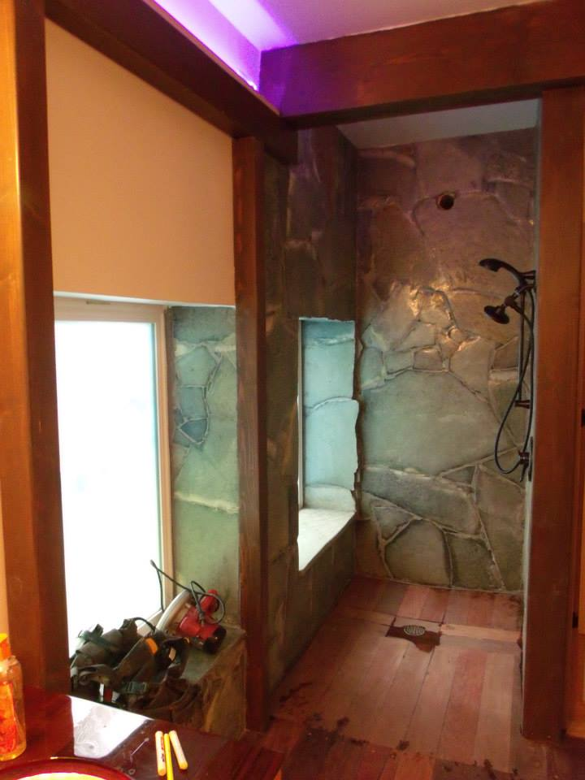
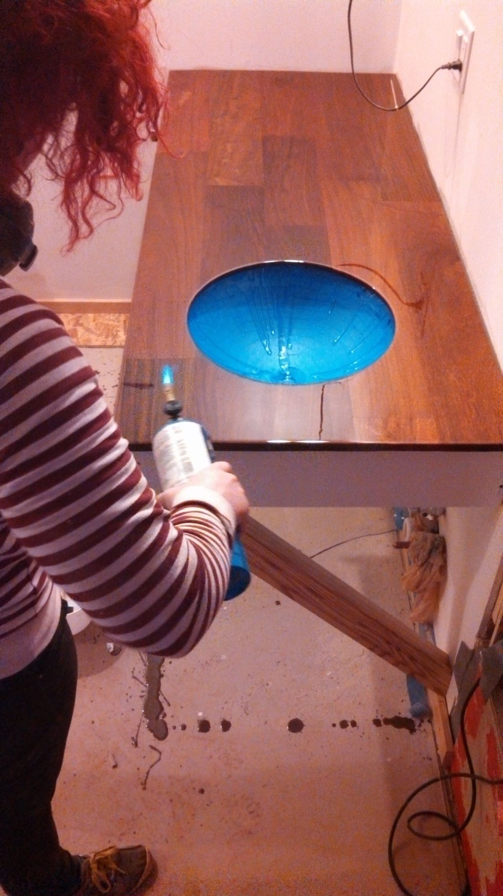
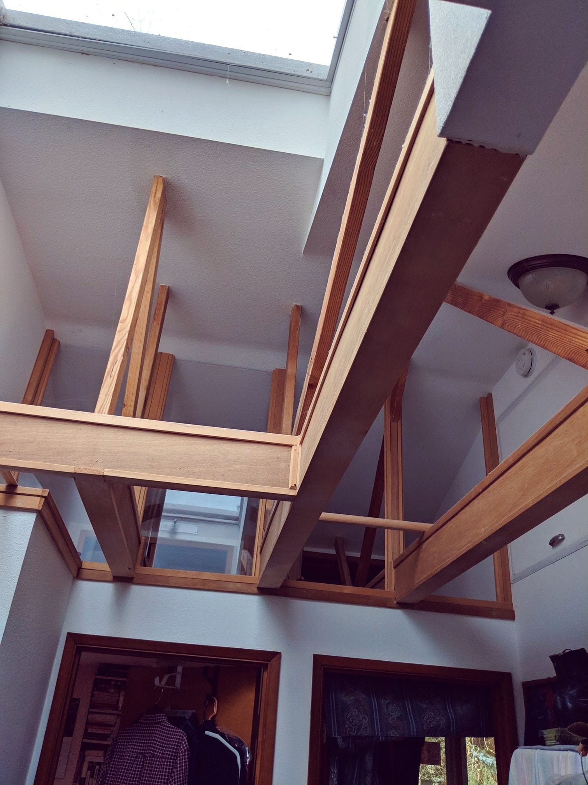
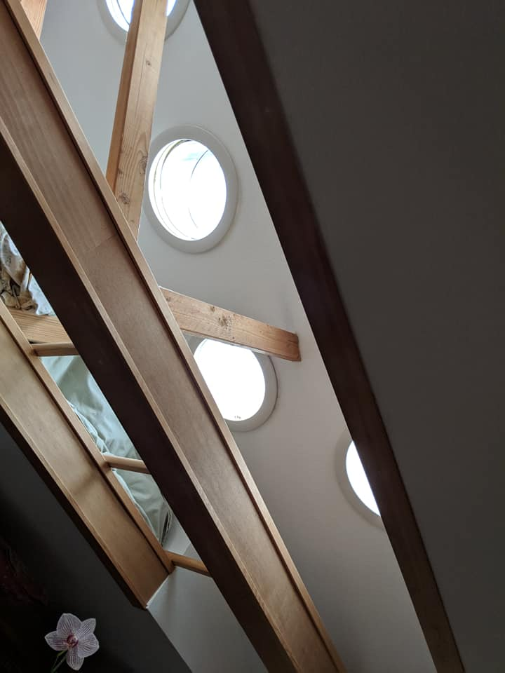

I have had the luck to work on a few jobs that
allowed me to apply art to the design.

Recycled brick with Jagermeister bottles
Repurposed french doors and Radient floor

A sculpture to mount in the above patio floor

One of two custom, triple glazed windows
Sonya Bolon design collaboration.

A roll-in shower with granite-faced walls and (environmentally sourced) Ipe wood flooring.

My forperson, Li, tourching the bubbles out of an acrylic finish.

To let light into the bedrooms, and allow circulation,
I built a vented transom over the walls

One of two banks of (8)Solar Tubes floods the bedrooms and provides storage.